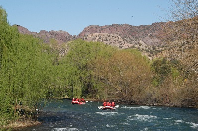
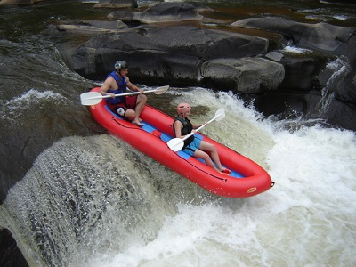
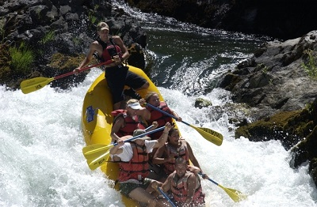
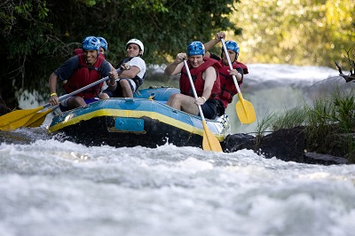

Lazy days Float trip
Not every trip we do is action packed thrill rides, sometimes we simply float down the river and fish. With this trip you get a ride down the river and a lunch in early afternoon. There is fishing and conversation, and it is a great way to decompress.
- Fishing Gear
- Sack Lunch
- Safety Equipment
- Great memories
- Full Day: $78.00 per person
- Half Day: $58.00 per person
Mid-level Adventure
This is not a lazy day on the river. It is a strech of water that has a little of everything in it. There are mild rapid and slow moving parts, but there are some real hair raising waters that will give you something to write home about.
- Fishing Gear
- Sack Lunch
- Safety Equipment
- Wet clothes
- Full Day: $128.00 per person
- Half Day: $98.00 per person
"Hold on to your hat" Adventure
This adventure is not for the faint of heart. It is 15 miles of some of the roughest water on earth. On this trip you will experience several class three rapids with one moderate waterfall. Experienced Rafters only!
- Safety Equipment
- Random shots of adrenline.
- Full Day: $208.00 per person
- Half Day : 78.00 per person
Group Rates for large groups
There are a few things that can help you bond better than a day on the river paddling for your life. We can do family renunions, or work bonding experiences. We have experience with large groups of every size. Consider us for your next group activity.
- Fishing Gear
- Sack Lunch
- Safety Equipment
- Great memories
- Full Day: Call for a Price
- Half Day: Call for a Price